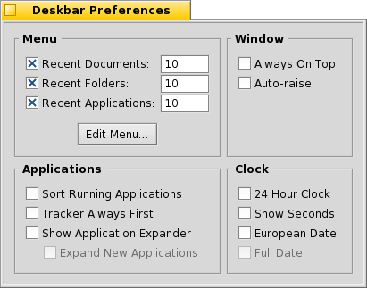

Deutsch
Deutsch Français
Français Italiano
Italiano Русский
Русский Español
Español Svensk
Svensk 日本語
日本語 English
English| Index |
|
Das Deskbar Menü Das Tray Die Liste der Programme |
Deskbar
Die Deskbar wird standardmäßig in der oberen rechten Ecke des Desktops angezeigt. Sie ist praktisch Haikus Version von Windows' "Taskbar" und "Startmenü". Sie besteht aus dem Deskbar Menü, von dem aus Programme und Einstellungen aufgerufen werden können, darunter einen Infobereich (das "Tray") mit Uhr und Hilfsprogrammen, sowie eine Liste der gerade laufenden Programme.

Die Deskbar kann in jede der vier Ecken - oder entlang des oberen oder untereren Bildschirmrands - verschoben werden. Hierzu muss die gepunktete Linie seitlich vom Tray mit der Maus zur gewünschten Position gezogen werden. Man kann die Deskbar auch zu einer kompakten Darstellung zusammenschieben, indem man die gepunktete Linie auf das Deskbar Menü zieht.
 Das Deskbar Menü
Das Deskbar Menü
Ein Klick auf den oberen Bereich der Deskbar öffnet dieses Menü:

About This System... - zeigt grundsätzliche Informationen zum installierten System, Lizenzinformationen und Danksagungen.
Find... - öffnet den Query Dialog; ein mächtiges Werkzeug zum Suchen und Finden.
Show Replicants - zeigt/verbirgt die kleinen Symbole mit dem Replikanten verschoben, bzw. mittels deren Kontextmenü entfernt werden können.
Mount - öffnet den gleichen Dialog zum Einbinden von Partitionen, wie bei einem Klick auf den Desktop (siehe Datenträger einbinden).
Deskbar Preferences... - öffnet ein Dialogfenster um die Deskbar anzupassen (siehe unten).
Shutdown - bietet die Möglichkeit, das System neu zu starten () oder herunterzufahren ().
Recent Documents, Folders, Applications - eine Liste der kürzlich geöffneten Programme, Dateien und Ordnern (siehe weiter unten).
Applications, Demos, Deskbar Applets, Preferences - eine Liste aller installierten Programme, der Demo-Programme und der System-Einstellungen (siehe weiter unten).
Deskbar Preferences

Menu
Hier lässt sich die Anzahl der kürzlich geöffneten Dokumente, Ordner und Anwendungen einstellen, die in den entsprechenden Menüs der Deskbar erscheinen.
öffnet den Ordner /boot/home/config/be/. Hier befinden sich die Dateien und Ordner aus der Deskbar, standardmäßig , , und .
Einträge wie Verküpfungen zu Anwendungen, Dokumenten oder sogar Query-Suchen können hinzugefügt und wieder gelöscht werden, indem man sie einfach in diesem Ordner ablegt bzw. entfernt.Noch einfacher geht das, indem man eine Datei, Ordner oder gespeicherte Query einfach an die gewünschte Position in die Deskbar zieht.
Window
Die Deskbar bleibt immer im Vordergrund über allen anderen Fenstern. Wird die Deskbar vom Mauszeiger berührt, springt sie automatisch in den Vordergrund. Applications
Ordnet die Liste laufender Programme alphabetisch. Selbst wenn alphabetisch sortiert wird, bleibt Tracker immer erster in der Liste. Über ein kleines Symbol lassen sich die Fenster eines Programms direkt unter seinem Eintrag in der Deskbar ein- und ausklappen. Fenster neu gestarteter Programme werden automatisch unter deren Eintrag in der Deskbar ausgeklappt. Clock
Schaltet zwischen 24 und 12 Stundenanzeige um. Blendet die Sekundenanzeige ein. Zeigt das Datum im europäischen Tag-Monat-Jahr Format
Das Tray

Im Tray befindet sich unter anderem die Uhr. Ein Linksklick wechselt zwischen Zeit- und Datumsanzeige. Ein Rechsklick öffnet ein Kontextmenü mit dem die Uhranzeige aus- und eingeschaltet und zur Einstellung das Panel Time geöffnet werden kann.
Außerdem kann hier ein kleiner Kalender angezeigt werden. Der erscheint übigens auch, wenn man die linke Maustaste etwas länger auf der Uhr gedrückt hält.
Das Tray steht jedem Programm zur Verfügung, um dort Informationen oder Einstellungsmöglichkeiten für den Benutzer bereit zu stellen. So ändert sich zum Beispiel das Icon des Mailsystems, sobald ungelesene E-Mails vorhanden sind. Der ProcessController ist ein weiteres Beispiel. Er zeigt durch Balken die aktuelle Prozessor-Last und Auslastung des Hauptspeichers und bietet über ein Kontextmenü weitere Informationen und Aktionen.
Die Liste der laufenden Programme

Hier werden alle Programme angezeigt, die gerade aktiv sind. Durch einen Klick auf ein Programm kann man zu diesem, respektive zu einem seiner Fenster, wechseln. Mit einem Rechtsklick minimiert oder schließt man ein Programmfenster oder das gesamte Programm.
Bei aktivierter Einstellung "Show Application Expander..." in den Deskbar Einstellungen, kann man über das kleine Dreieck die Liste der einzelnen Fenster eines Programmes direkt unterhalb des jeweiligen Eintrages in der Programmliste anzeigen lassen.
Das Symbol vor den Einträgen der einzelnen Programmfenster zeigt Informationen zu diesem Fenster. Ein farbiges Icon repräsentiert ein sichtbares Fenster, ein ausgegrautes Icon ein minimiertes Fenster. Linien vor dem Icon deuten darauf hin, dass das Fenster auf einem anderen als dem aktuellen "Workspace" ist.